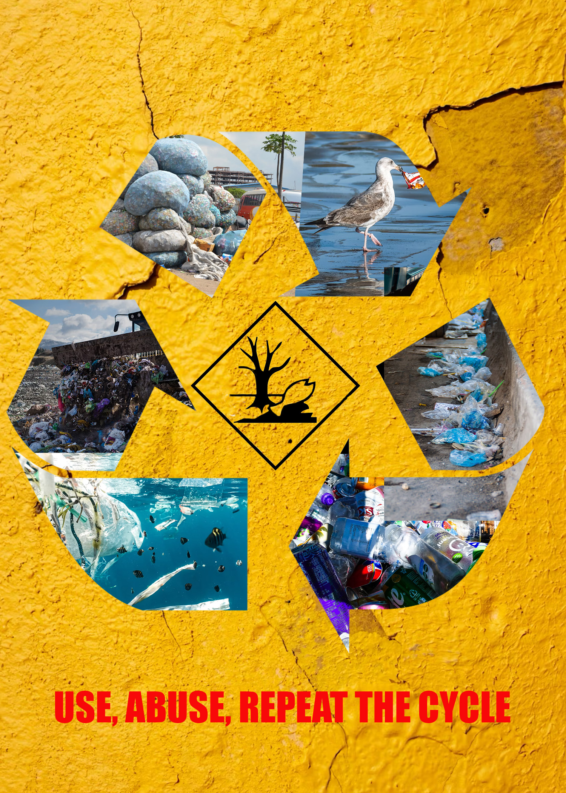
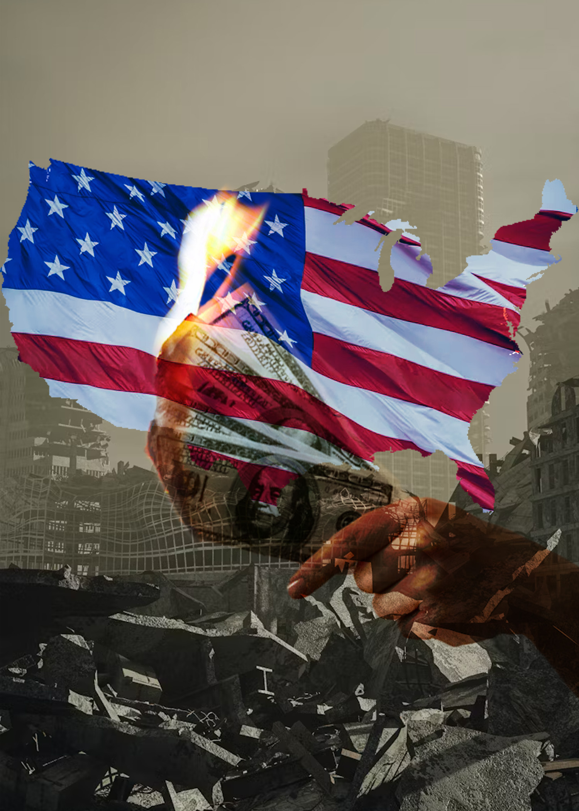

Themes:Consumerism, Capitalism, Environmental pollution, Animal endagerment
Photomantage 1:
PSD working file:

Photomontage 2:
PSD working file:

These photomontages illustrate the social and economic, environmental issues that stem from consumerism. As shown in the 1st collage, the amount of waste that we create not only disrupts ecosystems but it’s done significant irreparable damage to our planet. This cycle has been repeated throughout history and I showcased this through the use of a clipping mask. I inserted images of overcrowded landfills, polluted oceans, and animals interacting with this environment into the recycling arrows. To juxtapose the idea of recycling to the reality of where our waste ends up. I replaced the well known phrase “Reduce, Reuse, Recycle”, with a statement that more accurately reflects the deteriorating environmental conditions. My second photomontage highlights the value we put on money as a society. It’s considered a necessity to survive and people will go extreme lengths to obtain it. The chase for wealth in this world will eventually lead to its ruin. As demonstrated with the dystopian like image of a city. The money on fire depicts consumerism, spending money on fast fashion, single use plastics, and other indulgences that ultimately don’t have much significance. I used 2 blending modes in this image; dissolve, then I applied “Hard Light”, and adjusted the opacity. Creating an image that starts to blend into the background of the city. I also used a clipping mask for the American flag to fit into the outline of the country. My images were sourced from a public domain site called Upslash.com. This site was a useful resource since it had multiple categories of high quality images to download for free.